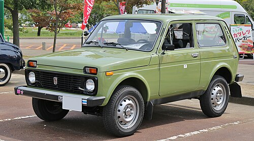

niva

The Lada Niva Legend,[3] formerly called the Lada Niva, VAZ-2121, VAZ-2131, and Lada 4×4 (Russian: ВАЗ-2121, ВАЗ-2131, Лада Нива), is a series of four-wheel drive, small (hatchback), and compact (wagon and pickup) off-road cars designed and produced by AvtoVAZ since 1977. Initially aimed at the rural market, later models also targeted urban users. The three- and later five-door 4×4 hatchbacks were sold under the Lada marque in many markets,[4] and have been in continuous production since 1977.
In the 1990s, three- and five-door wagons on a 50 cm (20 in) longer wheelbase and an extra-long wheelbase pick-up were added to the range.[clarification needed] After the original Land Rover and its successor, the Land Rover Defender, were discontinued in 2016, the Niva became the longest-production-run off-road light vehicle still manufactured in its original form. By the end of 2020, an estimated 650,000 Lada Nivas had been sold globally.[5]